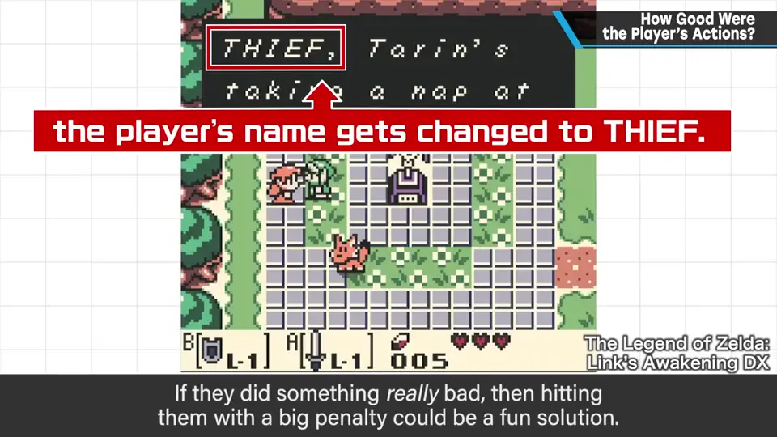
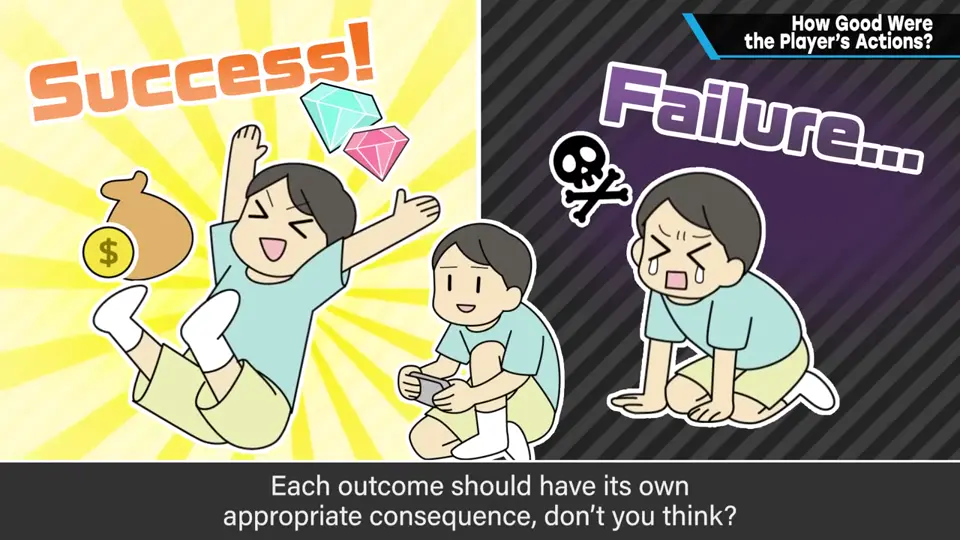
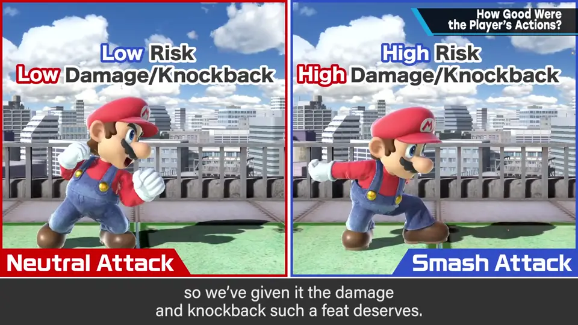
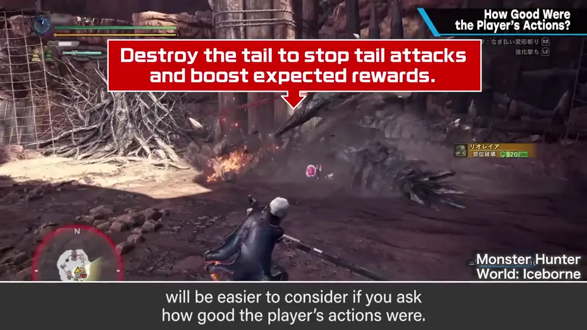
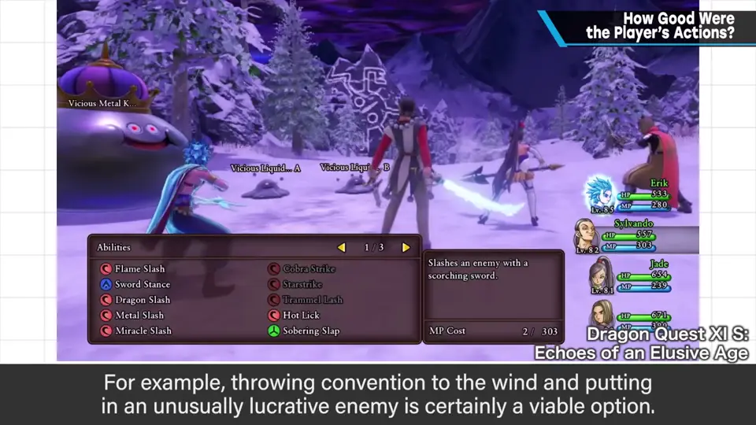

速览
决定游戏难度、奖励和惩罚时，最好以「玩家做了多好的事」为思考基准。例如玩家做了无法挽回的事（或游戏里有这种要素）时，做了那么坏的事就给予大惩罚也是一种做法（如《织梦岛》里偷东西后名字会变成 THIEF）；但那能否挽回、挽回要花多少力气？这一点能引出对游戏中大大小小各种东西的重新审视。人们容易从剧情方便出发去想，但需要回头看看玩家真的做了那么坏的事吗。工作取得成果或失败，其结果都应被恰当反映。《大乱斗》的弱攻击与蓄力攻击（Smash）：弱攻击快、破绽小；Smash 出招慢、还会露出破绽——打中后者更了不起，所以给它相应的攻击力和击飞力。比分数的游戏，按敌人的强度和好不好打来定分数是基本，也理所当然。攻击部位不同分数或伤害不同、部位破坏让对方攻击变弱之类的攻略要素，也都能用「玩家做得多好」来整理。对玩家来说，行动被正确评价更好；但做过头会让游戏变得圆滑、失去刺激，打破一点常识就好。例如大胆打破常规，设定能突然大赚一笔的敌人，再让它会逃跑或很硬、很难打倒，就能带来有稀有感的目标意识。
1. 以「做得多好」为基准 0:03
决定游戏难度、奖励、惩罚时，最好基于这样的思路：玩家做了多好的事？
- 玩家做了无法挽回的事（或游戏中有这类要素）时：做了那么坏的事就狠狠惩罚，也是一种做法；
- 但那能挽回吗？挽回要花多少力气？——这能引出对游戏中大大小小各种东西的重新审视。


人容易按剧情的方便来考虑，但需要回头看看：玩家真的做了那么坏的事吗？游戏中完成工作取得成果，或失败——各自的结果都应被恰当地反映。
2. 实例 1:00
- 《大乱斗》的弱攻击与 Smash 攻击：弱攻击快、破绽少；Smash 攻击出得慢还会露出破绽。后者打中更了不起，所以给它与之相称的攻击力和击飞力。
- 比分数的游戏中，按敌人的强度和好不好打来定分数是基本——某种意义上理所当然。
- 攻击部位不同分数或伤害不同；部位破坏会削弱对方攻击等攻略要素，也能用「玩家做得多好」来整理。


3. 别做过头 1:53
对玩家来说，行动被正确评价更好，所以请重新审视「玩家做了多好的事」。但做过头会让游戏变得圆滑、失去刺激——打破一点常识就好。
例如：大胆打破常规，设定一个能突然大赚一笔的敌人，再让它会逃跑或很硬、很难打倒，就能赋予玩家有稀有感的目标意识。

自测题
1. 决定奖励与惩罚时，樱井建议以什么为基准？
玩家做了多好（多坏）的事；并审视无法挽回的事能否挽回、要花多少力气。 0:03
2. 《大乱斗》为什么让 Smash 攻击比弱攻击更强？
Smash 出招慢、会露出破绽，风险更高，打中更了不起，所以给它相称的攻击力和击飞力。 1:12
3. 按「做得多好」评价做过头会怎样？如何补救？
游戏会变得圆滑、失去刺激；可以适度打破常识，例如设置能大赚但会逃跑或很硬的稀有敌人。 2:05